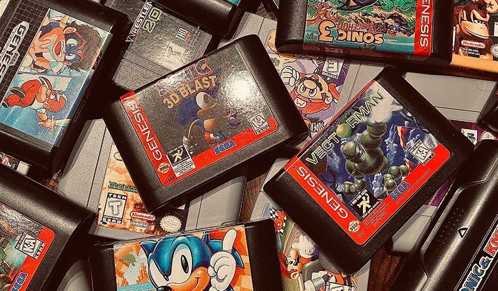

COVID-19 created a chain reaction that affected many aspects of our lives. One of the most remarkable shifts occurred in the video game industry. As people found themselves confined to their homes during the pandemic, they sought entertainment and were willing to spend money on it. Retro video games emerged as a popular choice, particularly among families and parents who had grown up playing classic video games from the 1980s through the 2000s. While there was already a demand for retro games, several external factors contributed to the unprecedented surge in prices. Entities like WATA and Heritage Auctions were keenly focused on the retro gaming market, laying the groundwork for an opportunistic and speculative environment that bordered on manipulation.
Karl Jobst, a prominent YouTuber, initially gained fame as a Goldeneye 007 speedrunner before transitioning into investigative journalism within the video game industry. His exploration of the retro video game boom during COVID-19 stands as some of his finest work. Jobst’s investigation uncovered instances of corruption and greed within WATA and Heritage Auctions, ironically, the same entities responsible for the coin bubble of the 1980s. His findings catalyzed other journalists to scrutinize and condemn those responsible for artificially inflating the market. The criticism persists to this day, culminating in a class-action lawsuit against WATA and Heritage Auctions. Consequently, the backlash triggered a crash in the retro video game market, with prices plummeting by as much as 70% to 95% of their original values.
While it may evoke sympathy for those who suffered significant losses, the reality differs for high-ticket items. Jobst’s research revealed that investors, groups, and companies primarily drove the market, seeking substantial profit margins. Genuine collectors were not the primary buyers of these retro video games. As a collector myself, I take pride in knowing the games I purchase and derive enjoyment from playing them. However, the opportunistic crowd lacks this connection to games, focusing solely on profit. Consequently, the gaming community has become somewhat toxic, driven by profit-seeking rather than genuine appreciation.
This shift has prompted many gamers and collectors to turn to emulation as an alternative. It’s a strategy I don’t blame others for adopting, considering the exorbitant prices in the second-hand market. Nevertheless, there will always be a market for video game collectors. As prices decrease, it is hoped that more enthusiasts will join the retro video game scene, fostering an appreciation for gaming history and preserving forgotten titles for future enjoyment.